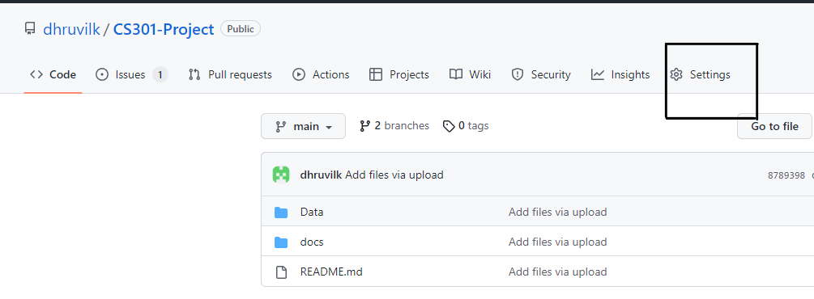
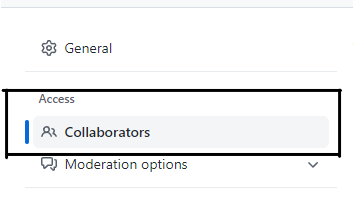
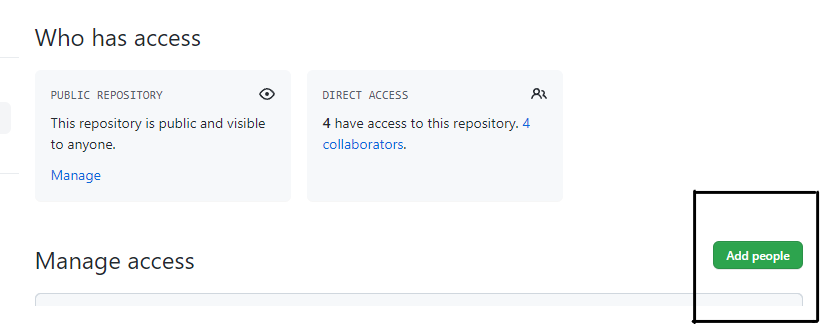
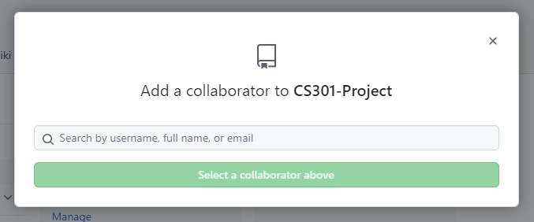
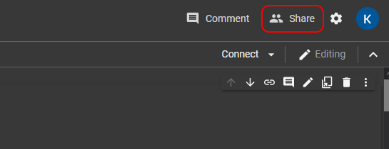
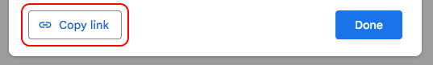
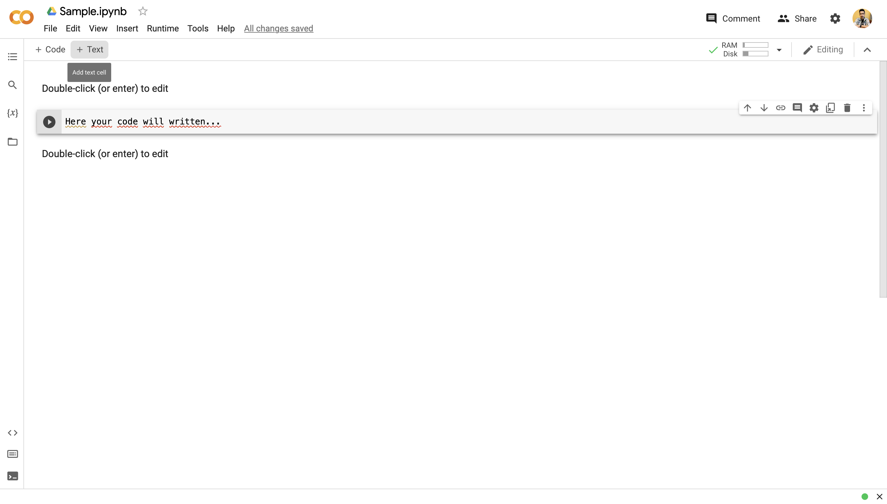
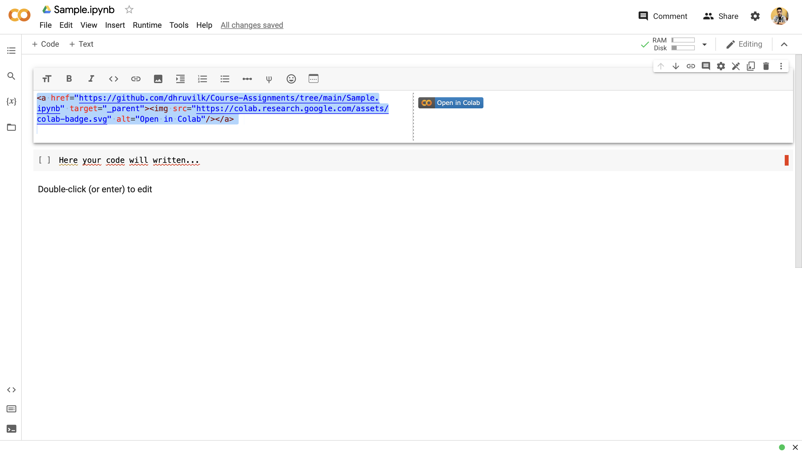
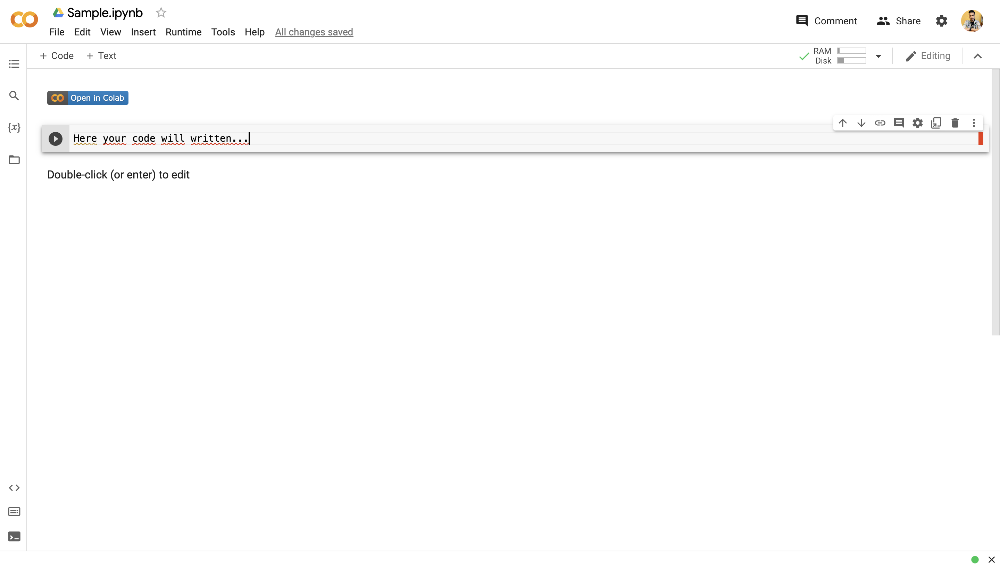

Your Programming Environment
Contents
Your Programming Environment#
Compute#
On your own machine or laptop (recommended)#
You need to create Python environments in this course. Nothing beats a container based environment for data science/AI workflows and we recommend VS Code as the IDE due to its felxibility in supporting remote containers.
Google Colaboratory (recommended)#
We will be using the free CPU/GPU resources provided by Google Colab. The good news is that you have an account in Google Colab as most of you have your university gmail account. Please note if you login to colab with your university account you get to use the almost unlimited Gdrive storage facility. You will need Google Colab for all your projects so that you can demonstrate that your results can be replicated. In addition Colab has many features that come handy.
On AWS (recommended)#
Please note that the AWS Deep Learning AMIs may not require installation or they may require update to the required version of TF/Pytorch. Choose this option if you can afford the hourly rate and you are disciplined to monitor the resources and terminate your instances.
On Hugging Face Spaces (recommended)#
HF spaces can get you started for free and this includes docker based environments ! So it should be your first choice when a project requires container based development eg. when the project is Django based.
Kaggle (not recommended)#
You can use Kaggle as an alternative to Colab for all your projects. You guessed it right - all the projects in this course are in fact Kaggle competitions. You can login with your gmail account. You can install by following the directions here the Kaggle command line interface (CLI). Not only you will get to compete (your ranking relative to others does not matter per se), but as you improve your knowledge over time you can revisit these competitions and see how your score improves. There is one catch though - Colab offers more GPU time and it comes with multiple tiers of service for a few dollars per month. This can be handy for the heavier projects.
Managing Python Runtimes#
Follow the instructions here to install Poetry and follow up with the basic usage instructions. Managing dependencies is one of the key challenges in data science. Poetry is a tool that helps you manage your dependencies.
Please ensure that you have used the virtualenvs.in-project configuration variable to create virtual environments within your project directory and that you know how to use .gitignore to avoid committing your virtual environment to your git repository.
Git / Github#
Learning basic git commands takes less than half an hour. However, to install git and understand the principle behind git, please go over Chapters 1 and 2 of the ProGit book.
As we have discussed in the class you need to be able to publish your work in Github so you need to create a Github account. Then you will use the git client for your operating system to interact with github and iterate on your projects. Almost no project starts in vacuum - there is almost always a repo that will neeed to be cloned and that you will need to modify to your needs.
How to work with a github repository in Colab#
Fork the desired repository if this is not yours. For example go to https://github.com/ageron/handson-ml2 and press the Fork button.
After forking you should see the repository appearing in your account.
Click the green button
Clone or download, click Use HTTPS and copy the field with the location of the repo your forked.Go to https://colab.research.google.com/ and login with your NJIT gmail account
In the window that pops up select Github. Accept the requested additional permission request for your NJIT gmail account. After Github and Colab connects you will be able to see the forked repo from your drop down menu of Repository. You will also see all the notebooks that start with a number e.g 01_the_machine_learning_landscape.ipynb. The number indicates the chapter number.
Select to open the 01-*.ipynb notebook by clicking on it. You should see the notebook in your own colab account. Any change will be persisted in your github.
Run the first cell. If you havent used Notebooks before, people with little programming experience will fall in love with them especially at this stage where you dont need to type new code. For a tutorial on how to use the notebooks in colab or in general open and run the notebook Welcome to Colaboratory.
Submitting Your Assignment / Project#
Step 1: Github Repository#
Make sure you know how to commit and push your changes to your repo. If you do not push the latest changes the grader will grade an outdates version of your code. The following steps will only need to be done once - at the beginning of the semester.
Go to the settings tab of your repository

On the left, find the tab titled “Collaborators”

Click on “Add people” and enter the GitHub id or email address of the desired collaborator(s)
 
Open the assignment on canvas, and enter the copied link into the given textbox.
Step 2: Colab Notebook#
If your assignment includes colab notebooks that will be (obviously) inside your github, you will need to also share them with your grader as they are hosted inside your Google account. You can do this as follows:
Navigate to your Colab Notebook and hit the “Share” Button at the top-right:

Enter the email of your Grader to share it with them. This will automatically email the notebook link to them as well. Do not share it with the Professor, only the Grader.
Hit the “Copy Link” button at the bottom of the dialog. You don’t have to enable link sharing if the notebook is already shared with the Grader.

Open the assignment on Canvas or Brightspace, and enter the copied link into the given textbox.
How to add the Open in Colab Button#
After adding the TA as a collaborator they will be able to see your code in Github. You need to add a “Open in Colab” button in your Github. When after clicking on it they will directed to the code on your Google Colab. Following are the steps :
Add a Text Markdown on the Start of your code in Google Colab just like below.

After Adding a Markdown section you need to add the following link to the same. Check the image. Also please note that in this link instead of “https://github.com/dhruvilk/Course-Assignments/tree/main/Sample.ipynb” you need to add the location of the notebook in which your code is present. Your notebook will be in your Github. So copy the link and paste it above. Rest will stay the same.

After adding the link upload the file to your Github. You will get the following results. Once clicked on “Open in Colab” button it will direct the TA to the code on your Colab notebook.

The following video is also useful on how to add the Open in Colab button in notebooks but also in a browser bookmark. The later is helpful when the notebook does not have the embedded button.

External Tools and Databases (Optional)#
Elastic Search Environment Setup#
For project work you may need to install ES. Please note you are responsible for setting up the environment. For example to set up ES in Win10 you may follow this guide but bear in mind that we cannot support any IT issues you may encounter in your laptop. You may decide to set up a development environment in AWS cloud 9 that is linux based for a small fee or taking advantage the free tier for new AWS accounts (which is not free if you need EC2 instances outside of what the free tier provides).